What is the loan duration for Internet Archive books?
Patrons now have a choice in selecting the loan period when they borrow a book. Patrons can choose a short-term access for 1 hour, or a longer 14-day loan. If we only have 1 copy of a book, it is only available for 1 hour loan. If we have more than one copy of a book, it can be checked out for either 1 hour or 14 days, depending on availability. If there are no copies available for 14-day loans, users can join a waitlist. There is no waitlist available for books that only offer 1-hour loans.
Can I download an encrypted PDF or EPUB of the book?
When patrons check out a book for 1 hour, they can only use it through the web book reader interface. When patrons check out a book for 14 days, they can either read the book through the web book reader interface or download an encrypted file using Adobe Digital Editions - the same technical protection software used by commercial publishers on their ebooks.
The book I want to read is only available for a 1 hour loan, but I can’t read the whole book in that time. Can I renew a book that I have borrowed for 1 hour?
Yes. If there are available copies, patrons can check the book out again. Also, if a patron continues reading the book, turning pages, after the 1 hour duration has passed and there is still a copy available, the book will be auto-renewed for another hour.
How does borrowing a book work through archive.org or OpenLibrary.org?
The Internet Archive and participating libraries have selected digitized books from their collections that are available to be borrowed by one patron at a time, from anywhere in the world for free.
These books are in BookReader, PDF and ePub formats (and Daisy for the print disabled).
You can choose which format you prefer as you complete the borrowing process.
BookReader editions may be read online immediately in your web browser. No special software is required.
Books in the lending library (PDF and ePub) are managed through Adobe Digital Editions, which you may need to download to manage your library of borrowed books.
For mobile devices we recommend downloading Aldiko (ios) (android) or Bluefire reader apps through your app store.
Is there a video tour for borrowing books through Open Library?
Yes, this tour of Open Library also guides you through the borrowing process and gives you some tips for finding books.
How do I get set up to borrow books through archive.org?
Follow these steps:
1. Sign up for an archive.org account
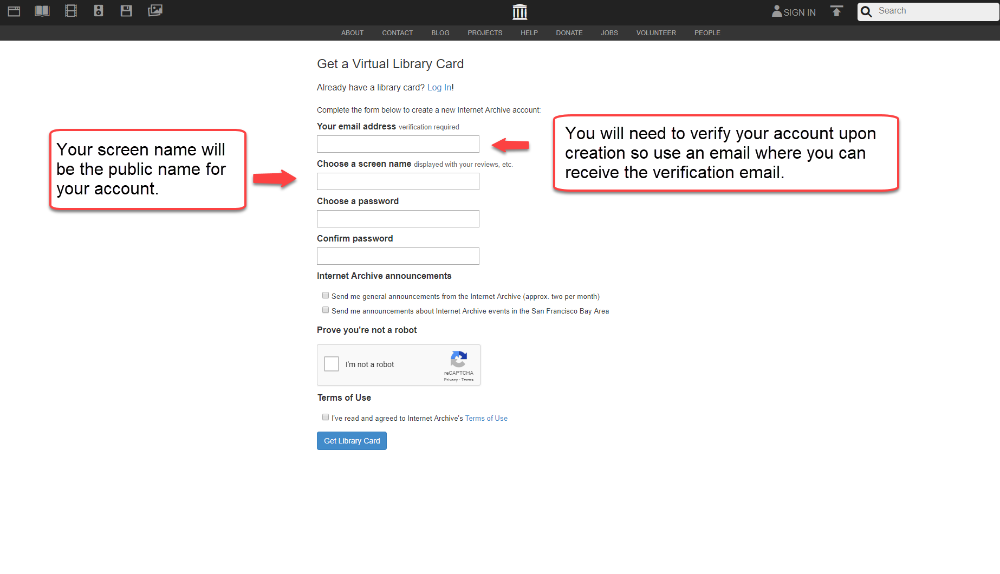
2. Find a book to borrow
There are a number of ways to find a book.
Click on the text icon 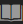 on the top left-hand corner of the black bar, or you can click on Books to Borrow, Open Library (which has suggested books and categories), or any of the featured texts at the top of the page.
You can also enter the title of the book or the author into the Search bar.
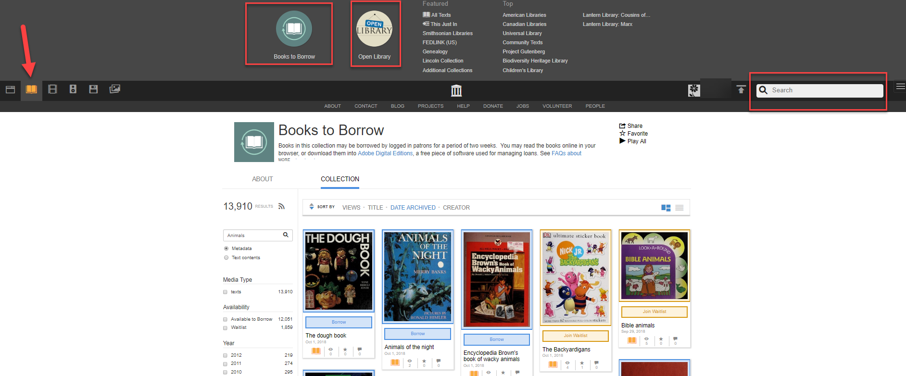
3. Borrow the book
Click on the book you would like to borrow. You will be taken to the item page and will be given the option to Borrow This book. Click on Borrow this Book. (If the book is on loan, you will be given an option to Join Waitlist)
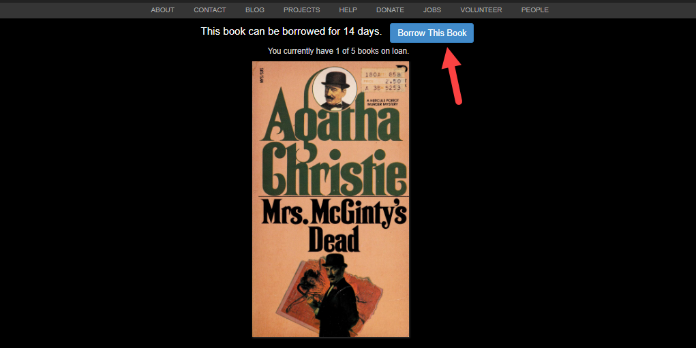
4. If a BookReader edition is available, you can read it instantly online in your web browser. Other formats will require that you download a file and open it in Adobe Digital Editions. You will be able to read in full screen by clicking on the expand icon.
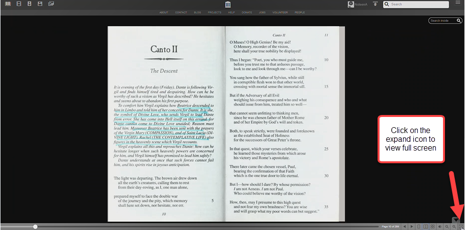
5. Some eBooks require Adobe Digital Editions (This is where you can read the books you've borrowed, manage your current loans, or return books).
Get an Adobe.com account (If you create an Adobe account, you can access your library from a variety of locations. If not, your loans will be tethered to a specific computer or device.)
Want to sign up for an Internet Archive account? Archive.org account
Where do I get Adobe Digital Editions?
You can download Adobe Digital Editions from adobe.com. It's free.
If you are using a device that can’t run Adobe Digital Editions, you still need an Adobe account. You can get one online here.
Where do I get reader apps for my mobile device?
For mobile devices we recommend downloading Aldiko (ios) (android) or Bluefire reader apps through your app store.
How do I authorize Adobe Digital Editions? Who is my ebook vendor?
The first time you run Adobe Digital Editions, it will prompt you for authorization. This is completely optional and is not linked to your archive.org ID.
If you do not want to set up an Adobe ID, check the box in the lower left where it says: I want to Authorize my computer without an ID and click Authorize.
If you do want to set up an ID, click the create an Adobe ID link next to the eBook vendor line (which should remain set on Adobe ID).
You can authorize your computer at a later date by going under the Help menu of ADE and selecting the Authorize computer... option.
How many books can I check out at once?
You can borrow 10 books at a time from archive.org.
Each loan will expire after 2 weeks and will automatically "return" at the end of that time period.
How can I see which books I've checked out?
To find your loans, just follow these steps:
1. Click on your Username a drop-down menu will appear. Click on My Loans.
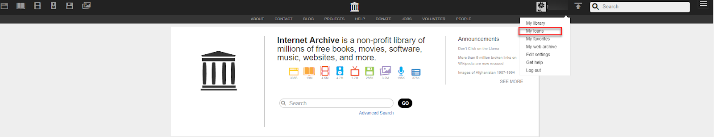
2. You will be able to view your loans.
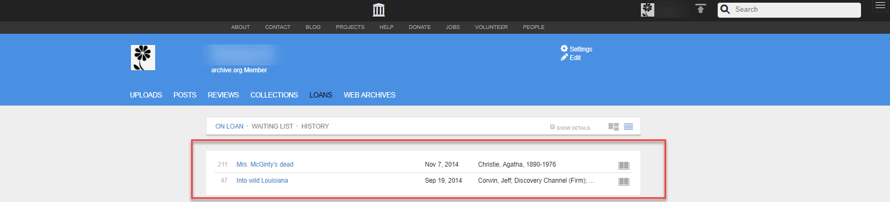
Which reading devices can be used to read the eBooks borrowed through archive.org?
Internet Archive offers borrowable books in BookReader, PDF and ePub formats.
BookReader editions may be read online immediately in any web browser.
Downloadable eBooks are readable in Adobe Digital Editions and some other software platforms. Here is a list of supported devices on Adobe's website.
ADE also provides support for Sony's Reader.
Can I borrow books on my Ipad or Android tablet?
Yes! You can read our books using our BookReader via your browser or by using a reader app like Aldiko Book Reader or Bluefire Reader.
For more information on Bluefire, go to their site at bluefirereader.com. Before you start, register an Adobe ID. You'll need to do this once. If you don't have one, create one on this page.
Using Aldiko Reader:
- Download and install “Aldiko Book Reader” from Google Play Store.
- Open Aldiko, Select Other Catalogs under the Get Books section of the menu.
- Select My Catalogs at the top and tap New Catalog on the green bar at the top.
- Create an entry for the archive.org using openlibrary.org for the URL. Tap on the library and sign in.
- When you have found a book you like, check it out.
- When the next screen comes up, select the pdf or ePub version.
- You will be prompted to enter your Adobe id and password.
- Your book will then download into Aldiko and you can open it and read it at your leisure.
The only downside to this process is that books can’t be returned early via non-Adobe applications, so you'll just have to let them expire or we can return them early if you need to free up space on your loans list.
Using Nook:
You will need Adobe Digital Editions(ADE) to use your Nook. Once you have ADE follow these instructions:
- Quit Digital Editions, if it’s running
- Plug in the Nook, and start ADE
- ADE should recognize the Nook, and offer to associate with it. Make sure you can see the Nook under Bookshelves on the left.
- Go to the Lending Library and borrow a book in pdf or ePub format.
- If ADE is working properly, you should see your book.
- Next, go to Library View in ADE – in the upper left.
- In the Library View, drag your new book over to the Nook icon under Bookshelves.
- Quit ADE and eject your Nook.
To read on the Nook:
- Go to your Library (on a Nook Color, do this by touching the bottom of the touchscreen)
- Go to my files – at the top – and open Digital Editions
- Open your book! (If it says “sorry, can’t open this book,” try again.)
To return your book early so that others can borrow it:
- Quit ADE if it’s running
- Plug in your Nook and start ADE
- Open Library View and click All Items on the left
- On your book icon, there’s a drop-down menu (a little triangle) in the upper left – select Return Borrowed Item
- Open the Nook, in the bookshelf area on the left
- On your book icon – select Return Borrowed Item
- Your book should now be available to borrow again!
If you run into trouble, have a look at the Barnes & Noble Help Center
Can I read or borrow books on my Kindle?
It may be possible if you can determine how to install Adobe Digital Editions (ADE) on your device. This is not possible for older Kindles at all, and may be possible for the most modern Kindles. We don't currently provide support for installing ADE, as there are too many configurations.
What about using e-readers?
Regardless of which e-reader you have, you can read archive.org eBooks online in your browser with our BookReader.
Many devices support PDF files, which can be downloaded from archive.org.
What happens if the book I want is on loan?
If you try to borrow a book that is currently on loan you will be offered a link to be put on a waiting list.
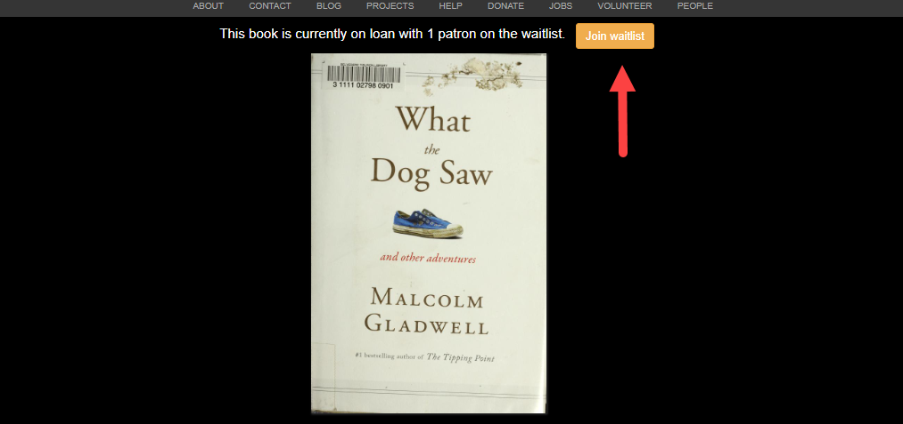
When you click on Join waitlist you will receive confirmation that you are on the list. You will also be given the option to leave the waitlist. You will be notified via email when your loan is ready.
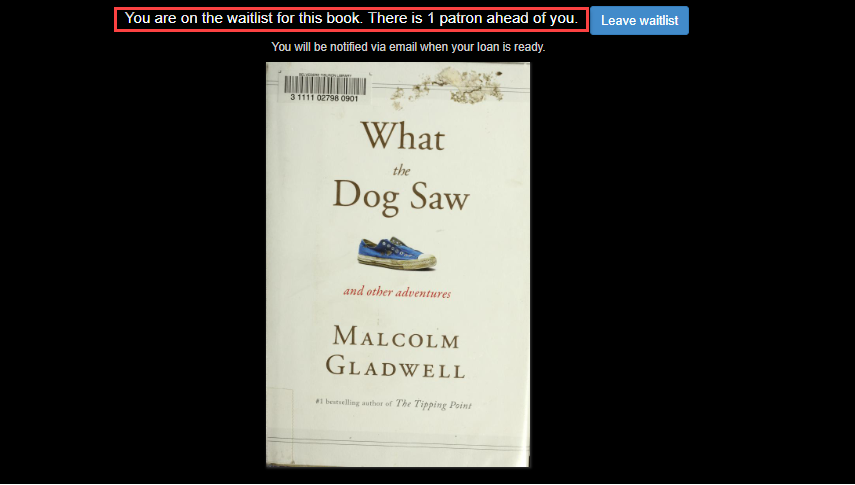
Can I return a library book early?
Yes, usually.
If you borrowed a BookReader edition, simply return it from your Loans page.
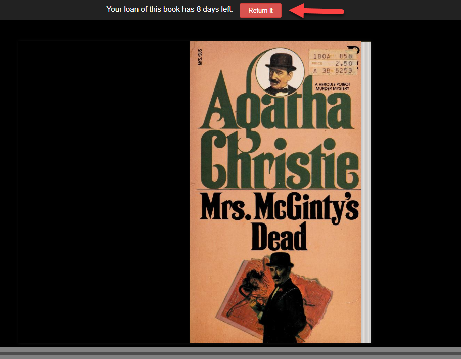
If you downloaded another type of eBook, you'll need to do that through Adobe Digital Editions.
If you checked out your book with other software like Aldiko or Bluefire Reader, you will not be able to return your book early.
To return in Adobe Digital Editions, look for your Library.
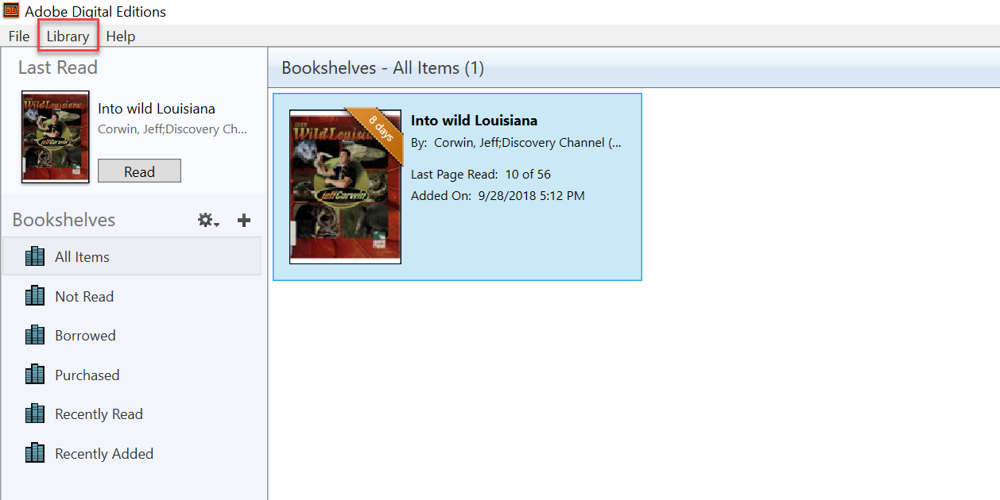
Right click on the book. A pop-up will appear with the option to Return Borrowed Item
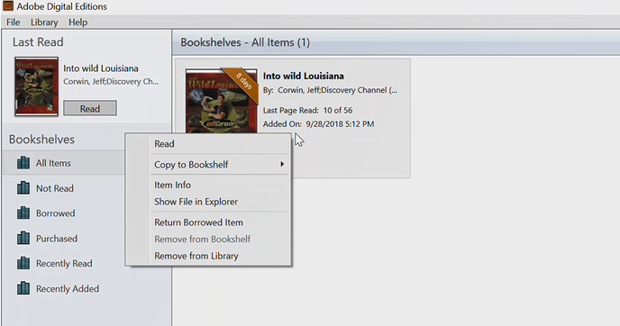
Click on Return Borrowed Item
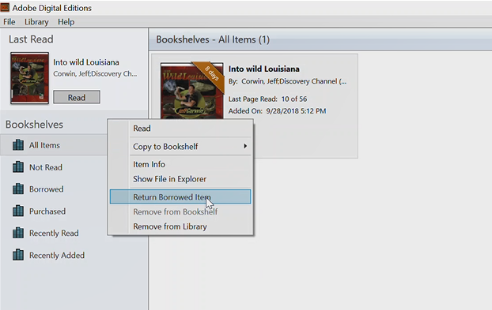
A confirmation pop-up will appear. Select Return.
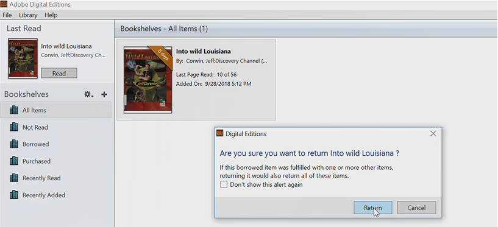
The book will be removed from your library.
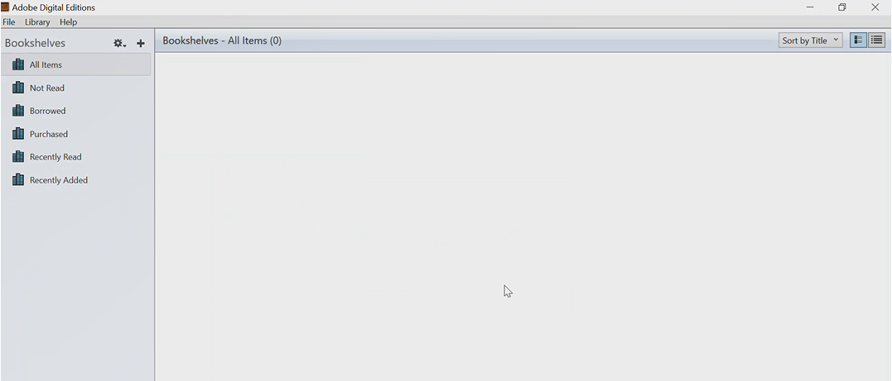
If you used other software to access your book, you may not be able to return it early but the item will be automatically returned at the end of the loan period.
Please contact us if you are having trouble returning your items.
Are there late fees?
No, we are a free library. After 14 days, the book will automatically be disabled.
Can I renew a book or extend the loan?
No. At this time you would need to borrow the book again. This may require that you join the waiting list if there is one.
Comments
0 comments
Article is closed for comments.